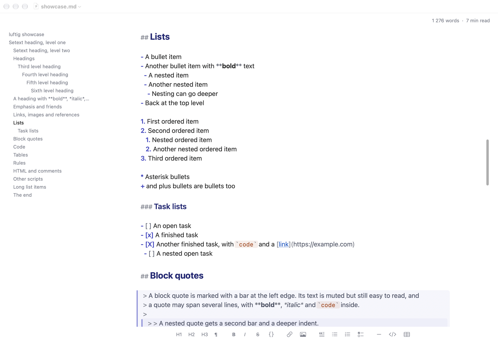
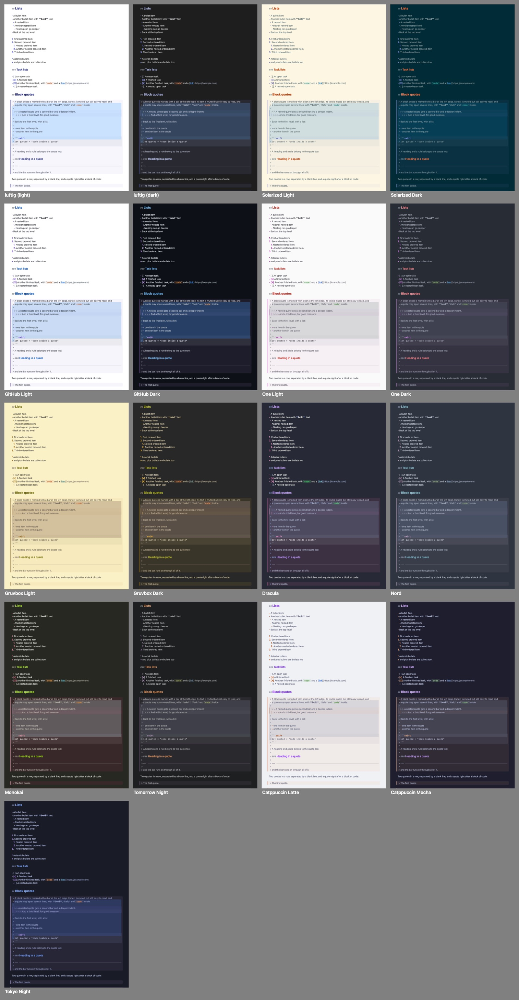
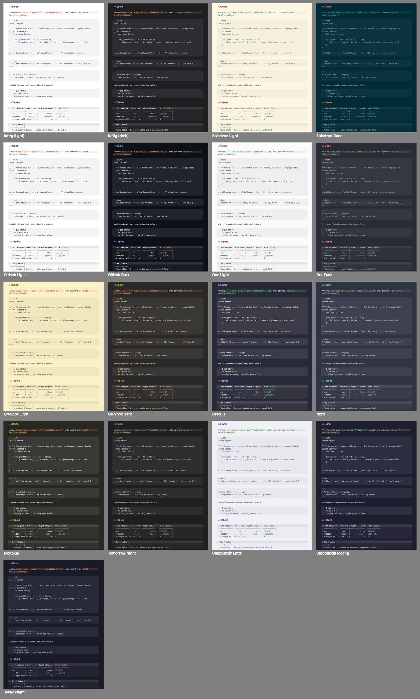

A small, fast Markdown editor for the Mac
luftig is a native macOS app for writing and thinking in plain text. One text view, no preview: the Markdown source is what you edit, styled in place. Alone, or with an AI that edits the same file.
Download luftigFree and open source · macOS 14 or later · Mac with Apple silicon

Headings are bigger, code blocks and quotes are marked, emphasis looks emphasised, and the syntax characters are dimmed but stay visible and editable. What you see is the file.
Why
- Fast and tiny. Pure AppKit and Swift, no web view, no dependencies, a 1.4 MB executable. A 1 MB file is on screen, styled, in about 20 ms, a 20 MB file in about 30 ms, and the idle CPU is 0.02 %.
- Made for working with an AI on the same files. luftig watches open files. When another program, an agent, a build tool or
git, changes one, the new text appears within about 50 ms, keeping your selection and scroll position. Your own unsaved edits are merged in when the changes do not overlap, and a banner asks when they do. Nothing is ever written over a version you have not seen. You choose the behaviour: reload automatically, ask first, or never reload. - No preview, just text. The file is the document; there is no second rendering to keep in sync and nothing an agent cannot read back. Copy as HTML or Rich Text and Export as HTML, Rich Text or PDF are there for the moment a document leaves the editor. CommonMark and GFM compatible.
- Deep visual customisation for distraction-free writing. Fonts for text, code and the panels, size, line spacing, column width, and adjustable padding. Sixteen colour schemes, any Base16 scheme from a file, or your own from seven colour pickers. Optional panels around the text: an outline of the headings, a word count and reading time, and a syntax bar that inserts Markdown with a click, all plain text in the scheme's dim colour, no boxes, no buttons. Typewriter Mode keeps the line you write on in the middle of the window.
Colour schemes
The default scheme follows the system appearance, light and dark. Fifteen more are the colour themes of well-known editors (Solarized, GitHub, One, Gruvbox, Dracula, Nord, Monokai, Tomorrow Night, Catppuccin, Tokyo Night), with every text colour kept legible on every surface. Import any Base16 scheme from a file, or make your own in Settings.


Installation
- Download
luftig-<version>.dmgfrom the latest release. - Open it and drag luftig into your Applications folder. The app is signed with a Developer ID and notarized, so macOS opens it without a warning.
- To make luftig the default app for
.mdfiles: select one in the Finder, choose File → Get Info, pick luftig under "Open with" and click "Change All".
With Homebrew:
brew install bernorieder/luftig/luftigLater versions arrive with brew upgrade. Everything else, from the keyboard shortcuts to the settings in detail and how the reload behaves in every case, is in the manual.
How it is built
- Native, with the older of Apple's two text engines. Swift and AppKit, no web view, no third-party code. The text is shown by a single standard macOS text view on TextKit 1, the engine that keeps a 10 or 20 MB file scrolling smoothly; luftig draws the code backgrounds, quote bars and code pills itself. Only the text on screen is styled, and a keystroke restyles only its own paragraph, which is why the size of a document barely matters.
- A regular macOS document app underneath. Open, save, autosave, undo, tabs, window restoration and Find are the system's own. Files are read with the lowest-level system call, so a file that is being rewritten by another program is never mapped into memory, and the character encoding and line endings a file came with are written back unchanged.
- Tested without a screen. 114 automated scenarios with about 4,300 checks cover the file handling, the editor driven by real key events, the pixels it draws, the colour contrast of every scheme, memory and speed; another 1,900 checks cover the Markdown lexer. The architecture notes describe the design and the pitfalls.
Privacy
luftig runs entirely on your Mac. It has no account, no server and no network connection of its own: it reads and writes the files you open and nothing else. There are no analytics, no crash reports and no tracking. The only time it talks to the network is when you click a link, which opens in your browser.